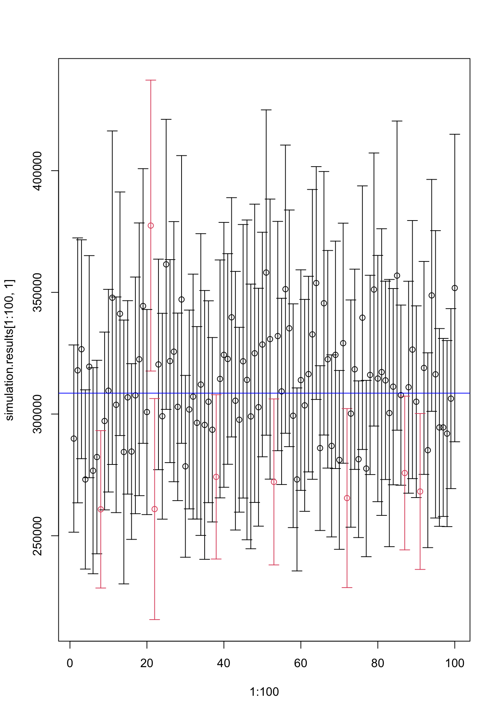

Code
library(latex2exp)Warning: package 'latex2exp' was built under R version 4.5.2library(latex2exp)Warning: package 'latex2exp' was built under R version 4.5.2## read survey data
agsrs <- read.csv ("data/agsrs.csv")
head(agsrs)## extract the variable of interest
sdata <- agsrs$acres92
N <- 3078
## do calculation
n <- length (sdata)
ybar <- mean (sdata)
se.ybar <- sqrt((1 - n / N)) * sd (sdata) / sqrt(n)
mem <- qt (0.975, df = n - 1) * se.ybar
## return estimate vector for pop mean
c (Est. = ybar, S.E. = se.ybar, ci.low = ybar - mem, ci.upp = ybar + mem) Est. S.E. ci.low ci.upp
297897.05 18898.43 260706.26 335087.84 ## return estimate vector for pop total
c (Est. = ybar, S.E. = se.ybar, ci.low = ybar - mem, ci.upp = ybar + mem) * N Est. S.E. ci.low ci.upp
916927110 58169381 802453859 1031400361 #
# sdata -- a vector of sampling survey data
# N -- population size
# to find total, multiply N to the estimate returned by this function
srs_mean_est <- function (sdata, N)
{
n <- length (sdata)
ybar <- mean (sdata)
se.ybar <- sqrt((1 - n / N)) * sd (sdata) / sqrt(n)
mem <- qt (0.975, df = n - 1) * se.ybar
c (ybar = ybar, se = se.ybar, ci.low = ybar - mem, ci.upp = ybar + mem)
}Import Data
agsrs <- read.csv ("data/agsrs.csv")Estimating the mean of acre92
srs_mean_est (agsrs[,"acres92"], N = 3078) ybar se ci.low ci.upp
297897.05 18898.43 260706.26 335087.84 Estimating the total of acre92
srs_mean_est (agsrs[,"acres92"], N = 3078) * 3078 ybar se ci.low ci.upp
916927110 58169381 802453859 1031400361 Estimating the proportion of counties with fewer than 200K acres for farming in 1992
acres92.is.fewer.200k <- as.numeric (agsrs[,"acres92"] < 200000)
head(acres92.is.fewer.200k)[1] 1 1 1 1 1 1srs_mean_est (acres92.is.fewer.200k, N = 3078) ybar se ci.low ci.upp
0.51000000 0.02746498 0.45595084 0.56404916 Estimating the total number of counties with fewer than 200K acres for farming in 1992
srs_mean_est (acres92.is.fewer.200k, N = 3078) * 3078 ybar se ci.low ci.upp
1569.78000 84.53722 1403.41670 1736.14330 agpop <- read.csv ("data/agpop.csv", na = "-99")
#true mean
mean (agpop[, "acres92"], na.rm = T)[1] 308582.4# true total
sum (agpop[, "acres92"], na.rm = T)[1] 943953599# true proportion of counties with less than 200K acres for farming
mean (agpop[, "acres92"] < 200000, na.rm = T)[1] 0.5145472# true number of counties with less than 200K acres for farming
sum (agpop[, "acres92"] < 200000, na.rm = T)[1] 1574# read population data
agpop <- read.csv ("data/agpop.csv")
# remove those counties with na
agpop <- subset( agpop, acres92 != -99)# sample size
n <- 300
# population size
N <- nrow (agpop); N[1] 3059# true value of population mean
ybarU <- mean (agpop[,"acres92"]); ybarU[1] 308582.4# true value of deviation of sample mean
true.se.ybar <- sqrt (1- n/N) * sd (agpop[,"acres92"]) / sqrt (n); true.se.ybar[1] 23320.29##
# srs sampling
srs <- sample (1:N,n)
head(agpop [srs, ])# get data of variable "acres92"
sdata <- agpop [srs, "acres92"]
# analysis
srs_mean_est (sdata, N) ybar se ci.low ci.upp
298590.22 19619.23 259980.95 337199.49 nres <- 5000 # number of repeated sampling
simulation.results <- matrix (0, nres, 4) # matrix recording repeated results
colnames(simulation.results) <- c( "Est.", "S.E.", "ci.low", "ci.upp")
for (i in 1:nres)
{
srs <- sample (N, n)
sdata <- agpop [srs, "acres92"]
simulation.results [i,] <- srs_mean_est (sdata, N)
}
head(simulation.results) Est. S.E. ci.low ci.upp
[1,] 289925.2 19549.35 251453.4 328396.9
[2,] 317952.1 27659.09 263521.0 372383.2
[3,] 326636.8 22850.11 281669.4 371604.2
[4,] 273124.9 18712.97 236299.1 309950.7
[5,] 319476.2 23186.78 273846.2 365106.1
[6,] 276724.2 21517.53 234379.2 319069.2# look at the distribution of sample mean
par (mfrow= c(2,2))
hist (agpop$acres92,main = "Population Distribution of acre92")
hist (simulation.results[,1], main = "Sampling Distribution of Sample Mean for acre92")
abline (v = ybarU, col = "red")
qqnorm (simulation.results[,1], main="QQ plot of Sample Mean"); qqline(simulation.results[,1])
boxplot (simulation.results[,1], main = "Boxplot of Sample Mean")
abline (h = ybarU, col = "red")
mean (simulation.results[,1])[1] 308431.7ybarU[1] 308582.4sd (simulation.results [,1])[1] 23544.65true.se.ybar[1] 23320.29simulation.results <- cbind (simulation.results, (simulation.results[,3] < ybarU) * (ybarU < simulation.results[,4] ))
colnames(simulation.results)[5] <- "Covered?"
head(simulation.results) Est. S.E. ci.low ci.upp Covered?
[1,] 289925.2 19549.35 251453.4 328396.9 1
[2,] 317952.1 27659.09 263521.0 372383.2 1
[3,] 326636.8 22850.11 281669.4 371604.2 1
[4,] 273124.9 18712.97 236299.1 309950.7 1
[5,] 319476.2 23186.78 273846.2 365106.1 1
[6,] 276724.2 21517.53 234379.2 319069.2 1library("plotrix")
par(mfrow=c(1,1))
plotCI(x=1:100,
y=simulation.results[1:100,1],
li = simulation.results[1:100,3],
ui = simulation.results[1:100,4],
col = 2-simulation.results[,5])
abline(h=ybarU, col = "blue")
# Empirical coverage rate
mean (simulation.results[,"Covered?"])[1] 0.9336